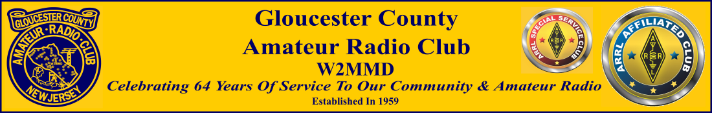

A plain copy of the slide deck, one slide after another with its speaker notes. Generated from the files in this folder.
APRS · K3YLE-15
Local fires, crashes and storms on your APRS map
K3YLE · [Meeting date]

1. Introduce yourself and the one-line idea: a Raspberry Pi that turns public dispatch, traffic and weather feeds for our area into APRS objects. Everything shown tonight is running now under K3YLE-15.
WHAT IT DOES
APPEARS
A short name, a position, a symbol and one line of text.
CHANGES
A tracked storm moves across the map as the warning is updated.
CLEARS
Nothing is left behind to linger after the incident is over.
The feeder checks its sources every two minutes and carries about 180 objects on a typical afternoon.
2. Open aprs.fi around Montgomery, Chester and Bucks counties and you see more than stations: a fire-truck symbol for a building fire, a crash symbol for an accident, a tornado symbol following a warned storm. The kill packet matters: APRS objects have no expiry of their own, so the feeder always retires what it created.
WHERE THE DATA COMES FROM
| Source | What it gives | Position |
|---|---|---|
| Montgomery County live CAD | Fire and traffic dispatches | Looked up from cross streets |
| Chester County WebCAD | Fire and traffic dispatches | Looked up from cross streets |
| Bucks County 911 Incident Report | Fire and traffic dispatches | Supplied |
| 511PA (PennDOT) | Crashes, closures, roadwork | Supplied |
| 511NJ | Crashes, closures, roadwork | Supplied |
| National Weather Service | Warnings, watches, tracked storms | Storm fix or warned area |
| NWS river and tide gauges | Flooding and low water | Supplied |
Where a source gives no coordinates, the position is looked up and marked with a trailing “?” when it is approximate.
3. All seven are public. The newest is the river and tide gauges: a gauge shows only while it is flooding or at low water, and disappears when it returns to normal. Two county feeds give only cross streets and a township, so the feeder geocodes them and caches the answer. The weather source includes National Hurricane Center storms. Philadelphia has no live dispatch feed, but PennDOT and the weather service already cover the city.
HOW IT WORKS
1
County dispatch, 511 traffic, weather, river gauges.
2
Find a position, name the object, write its text, kill what has cleared.
3
The only APRS-IS login. Sends what is new, changed or killed.
4
As K3YLE-15, on aprs.fi and in your APRS client.
Plain Python on a Raspberry Pi. Anyone can watch the live objects on a read-only map at aprs-incidents.phlm.sh; the operator’s own page fixes or deletes a wrong one and sets what is sent.
4. Each source has its own small script and none of them talks to APRS-IS. They hand their packets to a single sender, which holds the one connection and decides what actually goes out. That is what keeps the traffic down: before the sender existed, every script re-sent everything every two minutes. The sender also does three things on its own: it takes a source’s objects off after two hours of silence, sends only one object when a county feed and a 511 feed report the same crash, and sends a bulletin for anything rated critical.
EXAMPLE OBJECT
;TRAFD81BU*241700z4014.24N\07528.65W'VEHICLE ACCIDENT TOWNSHIP LINE RD/BRIDGE ST (PERKIOMEN) @12:00
TRAFD81BU
The name: a tag for the kind of incident, then a code that stays the same for its whole life.
*
Live. An underscore here instead kills the object.
241700z
Day and time, in UTC.
4014.24N\07528.65W'
Position, with the crash-site symbol.
The rest is the call type, the cross streets, the township and the dispatch time. Fires start with FIRE, roadwork with WORK, and weather with the alert type and forecast office.
5. This packet is from the feeder’s log. The name is what lets the feeder update or kill the same object later, so it must not change from poll to poll. Where the source has an incident number the code comes from that; where it has none, it is a hash of the incident’s details.
WHAT GETS SENT, AND WHEN
THE SENDER’S RULES
Sent on the next poll.
Repeated every 26 minutes, to stay alive on maps.
Held back, and killed if it is already on the air.
IMPORTANCE LEVELS
Critical
Tornado warning, entrapment, hazmat. Also a bulletin.
High
Building fire, rescue, a crash that closes the road
Medium
Other fires, crashes, road closures, weather warnings
Low
Alarms, disabled vehicles, roadwork, weather watches
6. The 26-minute repeat keeps objects on maps without filling APRS-IS with copies. Every object is rated from its name and the wording of its text, and the operator picks the lowest level that is sent. Most of the traffic is roadwork, which is rated low, so raising the minimum to medium cuts the object count by about nine tenths. Three more rules run by themselves. An object whose source has been silent for two hours is taken off. When a county dispatch feed and a 511 feed report the same crash, only the more important one is sent. And anything critical also goes out as a bulletin, BLN1 to BLN3, so radios that show messages but no map still get it.
ONE INCIDENT, ONE OBJECT
SEEN TWICE
A crash often arrives from county dispatch and from PennDOT or 511NJ.
MATCHED
A traffic object from each kind of source, that close, is one incident.
KEPT
The county’s on a tie. The other is held back, or killed if on the air.
Only traffic incidents are compared, and two reports from the same kind of source are never merged.
7. Without this, one crash on a state road shows as two objects a few yards apart: the county’s dispatch entry and the road agency’s. The sender compares a county feed against a 511 feed only, and only crashes and other traffic incidents, so roadwork never hides a crash. If the 511 report says the road is closed it rates higher and is the one kept. When the kept one ends, the other returns on its next poll if it is still active. This is new and has not yet been seen merging a real pair, so two separate crashes at one junction could be merged wrongly; the operator’s page shows what was held back and why.
BULLETINS
K3YLE-15>APRS,TCPIP*::BLN1 :Tornado Warning til 9:15PM
WHEN
Tornado warning, entrapment, explosion, hazmat. Repeated every 26 minutes.
HOW MANY
BLN1 to BLN3. A slot is free again when its object ends.
ON RF
The radio script carries those for objects inside its own radius.
For radios that show messages but no map. It ends when its object ends.
8. An object needs a map to be useful. A bulletin is plain text that almost every APRS radio and client shows in its message list, so the most serious incidents reach people who are not looking at a map. The text is the object’s own line. There is no kill for a bulletin: when the incident ends the feeder stops repeating it and the slot is reused. A fourth critical incident at the same time gets no bulletin. Stations running the radio script transmit only the bulletins for incidents inside their own radius. No critical incident has occurred since this was switched on, so it has been tested but not yet seen live.
GETTING IT ON THE AIR
ASKS
It asks the feeder for the objects within a chosen distance of your station.
PICKS
Medium and up, ten objects at most, plus a bulletin for anything critical.
SENDS
Direwolf or a hardware TNC, under your own callsign, in third-party form.
python3 aprs_radio.py --server https://aprs-incidents.phlm.sh --callsign W3XYZ-10 \
--lat 40.12 --lon -75.34 --kiss-tcp 127.0.0.1:8001
It needs only Python and prints what it would send until you add --transmit. Add --auto to carry everything nearby, slowly, most important first.
9. Today the objects reach APRS-IS only, so you need an internet-connected client. This script is how a station in the area can carry them on RF. Third-party form keeps the feeder as the owner of the object and stops igates sending the packet back to the internet a second time. Within 25 miles of Norristown there are about 130 objects, which is why the script starts small. The --kiss-tcp address shown is where Direwolf listens by default; a TNC on a serial port uses --kiss-serial with its device name instead. It has keyed a real radio through Direwolf: two objects and their kills went out on 144.39. What is still unconfirmed is a second station decoding them. Bulletins for critical objects in your area are transmitted too, ahead of the objects. With --auto the script takes every object in its radius, whatever the level, and sends only two or three packets per poll from a queue: kills, then bulletins, then objects by importance, so a new fire jumps ahead of roadwork and the low ones go out only when nothing more important is waiting.
AUTO MODE
Anything on the air is sent again every 30 minutes (--refresh). Within one level, a new or changed object goes before one of those repeats, and the one sent longest ago goes first. Low-importance objects go out only when nothing above them is waiting.
10. This is what --auto does every two minutes. The script asks the feeder for every object in its radius, at every level, and then works down this chart for each packet it is allowed to send. Kills come first so nothing this station put on the air is left behind. Bulletins for critical objects are next. Then objects, most important level first. Because only two or three packets go out per poll, the low-importance objects, mostly roadwork, trickle out in the gaps: around 25 miles of Norristown one evening the medium objects repeated every half hour and each low one got a turn about once an hour. A new building fire always goes ahead of whatever roadwork is still waiting. On a busy day some low objects may never be sent, which is the intent.
TRY IT
The objects are on the map now, around Montgomery, Chester and Bucks counties and into New Jersey.
Run an igate or digipeater? Carry your area’s incidents on RF.
Live map: aprs-incidents.phlm.sh · Talk to K3YLE for the script · aprs.fi/info/a/K3YLE-15
11. Close with the two asks: have a look at the map tonight, either on aprs.fi or on the feeder’s own read-only map, and if you run an igate or digipeater and want to try the RF script for your area, come and find me. The script has keyed my own radio; I am looking for a second station to confirm the packets decode.